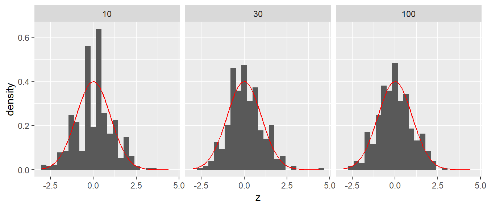
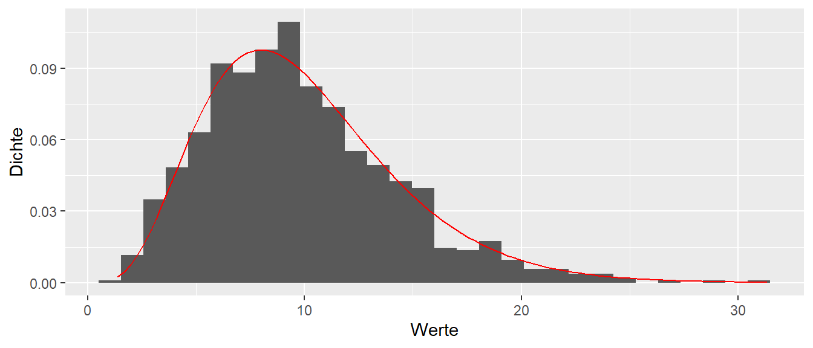

11 Theoretische Verteilungen
Wie wir in den vorhergehenden Abschnitten gesehen haben, brauchen wir immer die Stichprobenverteilung, um etwas über die beobachteten Daten aussagen zu können. Im Lummerland-Beispiel haben wir die Stichprobenverteilung direkt hergeleitet, da wir komplettes Wissen über die Population hatten. Dies hat uns ermöglicht, alle möglichen zu beobachtenden Werte zu berechnen. Dieser Fall ist bei einem realen Experiment leider nicht gegeben, denn wenn wir die Population und den Effekt kennen, brauchen wir das Experiment gar nicht erst durchzuführen. Stattdessen wollen wir anhand unserer Stichprobe etwas über die Population aussagen. Wir benötigen jedoch trotzdem die Stichprobenverteilung. Diese können wir herleiten, wenn wir in der Lage sind, unsere Stichprobe mit einer uns bereits bekannten Verteilung zu verknüpfen. Die Verteilung ist dabei eine theoretische Verteilung, und unsere Aufgabe ist es zu zeigen, dass unsere Stichprobe die Voraussetzungen und Annahmen der theoretischen Verteilung erfüllt. Dazu setzen wir uns in diesem Abschnitt eingehender mit dem Konzept der Verteilung auseinander und werden verschiedene für uns relevante theoretische Verteilungen kennenlernen.
Gehen wir noch einmal zurück und beginnen mit dem Graphen einer Verteilung. Auf der x-Achse sind die verschiedenen, möglichen Werte der jeweiligen Statistik abgetragen. In unserem bisherigen Beispiel war das der Unterschied \(D\) zwischen der Kontroll- und der Treatmentgruppe. Auf der y-Achse ist die relative Häufigkeit abgetragen. In diesem speziellen Fall war das auch sinnvoll, da wir nur eine endliche Anzahl von möglichen Unterschieden \(D\) (ihr erinnert euch an die Zahl) vorliegen hatten. Was passiert aber, wenn wir tatsächlich eine kontinuierliche Statistik haben, also eine Statistik, die alle Werte innerhalb eines Intervalls annehmen kann? Um diesen Fall zu verstehen, fangen wir aber erst einmal mit einem einfachen Modell an.
11.1 Der Münzwurf und die Binomialverteilung
Beginnen wir mit dem einfachsten Experiment: dem Münzwurf. Beim Münzwurf haben wir zwei mögliche Ausgänge unseres Experiments: Kopf oder Zahl. Wir gehen von einer perfekten Münze aus, d.h., die Münze ist vollkommen symmetrisch, und keine der Seiten ist in irgendeiner Form schwerer oder beeinflusst den Ausgang des Experiments.
Wenn wir uns an die Schule zurückerinnern, dann haben wir in der Wahrscheinlichkeitstheorie schon einmal gehört, dass im Fall gleichwahrscheinlicher Ereignisse die Wahrscheinlichkeit für ein bestimmtes Ereignis mittels der Anzahl der vorteilhaften Ausgänge geteilt durch die Anzahl der möglichen Ausgänge berechnet wird. Beim einmaligen Münzwurf haben wir zwei Ausgänge \(\{\text{Kopf}, \text{Zahl}\}\) und jeweils nur einen vorteilhaften Ausgang, also entweder Kopf oder Zahl. Daher folgt daraus:
\[\begin{align} P(\text{Kopf}) &= \frac{1}{2} \\ P(\text{Zahl}) &= \frac{1}{2} \end{align}\]
Tragen wir dies als Graphen in Form einer Wahrscheinlichkeitsverteilung ab, sieht das zunächst wenig interessant aus (siehe Abbildung 11.1). Das Muster ist jedoch wichtig, damit wir später wissen, worauf wir hier eigentlich schauen. Auf der x-Achse haben wir die möglichen Ausgänge, Kopf oder Zahl, und auf der y-Achse haben wir die Wahrscheinlichkeit abgetragen.
Da sich mit einem Münzwurf aber nur wenig anfangen lässt, erhöhen wir die Komplexität etwas und schauen uns an, was passiert, wenn wir zwei Münzwürfe durchführen. Rein operativ: Wir werfen unsere Münze in die Luft, notieren das Ergebnis und wiederholen diesen Vorgang noch einmal. Was auch immer beim ersten Wurf passiert, hat keine Auswirkungen auf das Ergebnis des zweiten Wurfs. Wir könnten aber auch zwei Münzen nehmen und beide gleichzeitig in die Luft werfen. Das wäre das gleiche Experiment.
Welche möglichen Ausgänge haben wir nun beim zweimaligen Münzwurf? Zunächst einmal haben wir jetzt nicht mehr nur einen einzelnen Ausgang, sondern ein Ereignistupel. Ein Tupel ist eine geordnete Liste mit Elementen, d.h. \((1,2) \neq (2,1)\).
Definition 11.1 (Tupel) Ein Tupel ist eine geordnete Liste von Elementen die nicht notwendigerweise unterschiedlich voneinander sein müssen. Da die Liste geordnet ist, sind zwei Tupel mit den gleichen Element aber unterschiedlichen Reihenfolgen unterschiedlich voneinander.
Etwas motiviertes kritzeln auf einem Schmierblatt wird für den zweimaligen Münzwurf wahrscheinlich relativ schnell zu folgender Tabelle führen (siehe Tabelle 11.1).
| Ausgang 1. Wurf | Ausgang 2. Wurf | Tupel |
|---|---|---|
| Kopf | Kopf | (Kopf, Kopf) |
| Kopf | Zahl | (Kopf, Zahl) |
| Zahl | Kopf | (Zahl, Kopf) |
| Zahl | Zahl | (Zahl, Zahl) |
Jetzt können wir uns wieder fragen, was die Wahrscheinlichkeit \(P\) für die jeweiligen Ereignisse, also die Ereignistupel, ist. Eine direkte Herleitung erfolgt wieder über die Symmetrie. Es gibt vier verschiedene Ereignisse, von denen keines in irgendeiner Weise bevorzugt ist. Daraus folgt, dass alle vier Ausgänge die gleiche Wahrscheinlichkeit haben. Damit ergibt sich eine Wahrscheinlichkeit von \(P = \frac{1}{4}\) für jedes der Ereignisse.
Eine weitere Möglichkeit wäre, mit den Wahrscheinlichkeiten aus dem einfachen Wurf an das Problem heranzugehen. Wir betrachten die beiden Münzwürfe jetzt wieder sequentiell (siehe Abbildung 11.2). Im ersten Schritt können wir entweder Kopf oder Zahl beobachten. Beide Wahrscheinlichkeiten sind \(P = \frac{1}{2}\). Darauf folgend können wir wieder zwei verschiedene Ausgänge beobachten, nämlich Kopf oder Zahl, ebenfalls mit der Wahrscheinlichkeit \(P = \frac{1}{2}\).
flowchart TD
A[Start] --> B(Kopf)
A --> C(Zahl)
B --> D(Kopf)
B --> E(Zahl)
C --> F(Kopf)
C --> G(Zahl)
Da die Münzwürfe voneinander unabhängig sind und keinen Einfluss aufeinander ausüben, folgt daraus, dass die Wahrscheinlichkeiten für jede spezielle Folge von Kopf oder Zahl folgendermaßen berechnet werden kann:
\[ P(\text{Ausgang}) = P(\text{1. Wurf}) \times P(\text{2. Wurf}) \tag{11.1}\]
Also in unseren Fall:
\[ P(\text{Ausgang}) = \frac{1}{2} \times \frac{1}{2} = \frac{1}{4} \tag{11.2}\]
Das wir die Wahrscheinlichkeiten miteinander multiplizieren können, wenn die Ereignisse unabhängig sind ist tatsächlich die Definition von Unabhängigkeit in der umgekehrten Richtung.
Definition 11.2 (Unabhängigkeit) Seien zwei Ereignisse \(E_1\) und \(E_2\) gegeben. Wenn die Wahrscheinlichkeit für das kombinierte Ereignis \(E_1 \cap E_2\) mittels \(P(E_1 \cap E_2) = P(E_1)P(E_2)\) berechnet werden kann, dann sind die beiden Ereignisse unabhängig voneinander. Umgangssprachlich: Die Kenntnis von Ereignis \(E_1\) gibt keine Information über das Ereignis \(E_2\) bzw. genauso umgekehrt.
Angewandt auf den Münzwurf kommen wir wieder zum gleichen Ergebnis wie vorher. Der Vorteil dieser Herangehensweise ist jedoch, dass wir damit eine einfache Möglichkeit gefunden haben, das Ergebnis für mehr als zwei Würfe verallgemeinern zu können. Nehmen wir zum Beispiel den dreifachen Münzwurf. Die Wahrscheinlichkeit für die Folge KKZ kann direkt mittels \(P(\text{KKZ}) = \frac{1}{2}\times \frac{1}{2} \times \frac{1}{2} = \frac{1}{8}\) berechnet werden.
Bleiben wir aber noch kurz beim zweimaligen Münzwurf und schauen uns die Wahrscheinlichkeitsverteilung an. Hier stoßen wir nämlich auf ein Problem in der Darstellung. Wenn wir das Muster aus Abbildung 11.1 beibehalten und auf der x-Achse die möglichen Ergebnisse sowie auf der y-Achse die dazugehörige Wahrscheinlichkeit abtragen wollen, ist nicht ganz klar, wie wir die Ergebnisse ordnen sollen. Eine mögliche Lösung ist in Abbildung 11.3 zu sehen.

Dies ist natürlich nicht die einzige Möglichkeit, wie wir die Ereignisse ordnen können, sondern wahrscheinlich ist jede der 24 möglichen Anordnungen gleich sinnvoll. Als Alternative könnten wir aber auch nicht mehr die beiden einzelnen Ausgänge als Ereignisse wählen, sondern zum Beispiel nur noch die Anzahl der beobachteten Köpfe in unseren zwei Würfen zählen. Dies würde zu der folgenden Zuordnung führen (siehe Tabelle 11.2).
| Ereignisse | Anzahl der Köpfe |
|---|---|
| (Kopf, Kopf) | 2 |
| (Kopf, Zahl) | 1 |
| (Zahl, Kopf) | 1 |
| (Zahl, Zahl) | 0 |
Wir verlieren bei dieser Zuordnung die Information, bei welchem Wurf die Zahl beobachtet wurde. In der Terminologie der Wahrscheinlichkeitstheorie wird die Anzahl der Köpfe als Zufallsvariable bezeichnet.
Definition 11.3 (Zufallsvariable) Eine Zufallsvariable ist die Abbildung eines Zufallsereignisses auf eine Zahl. Formal: Wenn wir mit \(\Omega\) die Menge der möglichen Ausgänge eines Experiments bezeichnen, dann ist eine Zufallsvariable eine Funktion, die jedem Element \(\omega \in \Omega\) eine Zahl \(x \in \mathbb{R}\) zuordnet (siehe Abbildung 11.4).
flowchart LR
A[Ereignis] --> B(Zahl)
Die Zuordnung der Zahlen muss dabei nicht immer der Ausprägung des Ereignisses entsprechen. Im Beispiel wäre es daher genauso möglich, dem Ereignis “0 Köpfe” die Zahl “10” zuzuweisen oder jede beliebige andere Zahl. Die Interpretation der Zufallszahl würde dann jedoch entsprechend komplizierter.
Zurück zur intuitiven Zuordnung. Wenn wir uns die Wahrscheinlichkeiten für unsere Zufallsvariable anschauen, dann bemerken wir zunächst, dass wir nicht mehr vier verschiedene Ausgänge haben. Die beiden Ereignisse (Kopf, Zahl) und (Zahl, Kopf) werden jetzt beide auf die Zufallsvariable \(1\) abgebildet. Dadurch haben wir jetzt nicht mehr vier verschiedene Ereignisse, sondern nur noch drei. Entsprechend sind jetzt die Wahrscheinlichkeiten für diese drei Ereignisse auch nicht mehr alle gleich. Die Wahrscheinlichkeit für das Ereignis “1 Kopf” ist gleich der addierten Wahrscheinlichkeit der Elementarereignisse. Wenn wir nun eine neue Wahrscheinlichkeitstabelle aufstellen, erhalten wir die folgende Liste (siehe Tabelle 11.3).
| Ereignisse | Zufallsvariable | Wahrscheinlichkeit |
|---|---|---|
| (Zahl, Zahl) | Keine Köpfe | \(\frac{1}{4}\) |
| (Kopf, Zahl), (Zahl, Kopf) | 1 Kopf | \(\frac{1}{4} + \frac{1}{4} = \frac{1}{2}\) |
| (Kopf, Kopf) | 2 Köpfe | \(\frac{1}{4}\) |
Tragen wir die Werte aus Tabelle 11.3 in Form eines Wahrscheinlichkeitsverteilungs-Graphen ab, ergibt sich die folgende Form (siehe Abbildung 11.5).
Nur um nebenbei noch einmal das Offensichtliche anzusprechen: Die Summe aller Ereigniswahrscheinlichkeiten muss wieder \(1\) ergeben. Das sollte auch direkt einsichtig sein. Wenn ich alle möglichen Ereignisse abfrage, also: “Was ist die Wahrscheinlichkeit, dass ich keine Köpfe, 1 Kopf oder 2 Köpfe beim zweimaligen Münzwurf erhalte?”, dann sind das alle möglichen Ausgänge. Dementsprechend sollte die Wahrscheinlichkeit für dieses kombinierte Ereignis \(= 1\) sein. Mathematisch ausgedrückt:
\[\begin{equation*} P(\text{0 Köpfe} \cup \text{1 Kopf} \cup \text{2 Köpfe}) = \frac{1}{4} + \frac{1}{2} + \frac{1}{4} = 1 \end{equation*}\]
Damit haben wir den Fall zweier Münzwürfe komplett abgehandelt. Gehen wir nun zum nächst komplizierteren Fall: die Anzahl der Köpfe bei drei Münzwürfen. Welche Möglichkeiten gibt es hier? Bei drei Würfen kann entweder \(0, 1, 2\) oder \(3\) Kopf auftreten. Wenn wir die Wahrscheinlichkeiten für diese vier Ereignisse berechnen wollen, können wir jedoch nicht einfach \(\frac{1}{4}\) für jedes Ereignis als Wahrscheinlichkeit ansetzen (Warum?). Schauen wir uns zunächst die möglichen Tupel, also die Elementarereignisse, an. Wir erinnern uns, dass die Anzahl der Köpfe eine Zufallsvariable ist, also eine Abbildung der 3-fach Tupel auf eine der Zahlen \(\{0, 1, 2, 3\}\).
| Elementarereignis | Anzahl Kopf |
|---|---|
| (Z,Z,Z) | \(0\) |
| (K,Z,Z) | \(1\) |
| (Z,K,Z) | \(1\) |
| (Z,Z,K) | \(1\) |
| (K,K,Z) | \(2\) |
| (Z,K,K) | \(2\) |
| (K,Z,K) | \(2\) |
| (K,K,K) | \(3\) |
Die Elementarereignisse in Tabelle 11.4 sind wieder alle gleich wahrscheinlich, daher können wir einfach abzählen. Es gibt insgesamt \(8\) mögliche Ausgänge. \(0\)-mal oder \(3\)-mal Kopf kommen jeweils einmal vor, \(3\) Ausgänge haben jeweils \(1\)-mal oder \(2\)-mal Kopf. Daraus folgt für die Wahrscheinlichkeitsfunktion (siehe Tabelle 11.5).
| Anzahl Kopf | P |
|---|---|
| \(0\) | \(\frac{1}{8}\) |
| \(1\) | \(\frac{3}{8}\) |
| \(2\) | \(\frac{3}{8}\) |
| \(3\) | \(\frac{1}{8}\) |
Das Ganze auch wieder als Graph (siehe Abbildung 11.6)

Bleiben wir noch einmal kurz bei dem Beispiel und versuchen, die Wahrscheinlichkeiten anders herzuleiten. Sollten wir zum Beispiel einmal in die Verlegenheit kommen, 20 Münzwürfe zu untersuchen, wird die Tabelle relativ schnell unhandlich.
Sei \(N\) die Anzahl der Würfe, die wir durchführen. Wenn wir \(N\) kennen, wissen wir auch direkt, welche möglichen Ausgänge bei dem Experiment möglich sind, nämlich alle Zahlen zwischen \(0\) und \(N\). \(0\), wenn wir keinen Kopf in den \(N\) Würfen beobachten, und \(N\), wenn wir nur Kopf geworfen haben. Dementsprechend sind alle Zahlen dazwischen ebenfalls möglich.
Schauen wir uns jetzt noch einmal den dreimaligen Münzwurf an. Wenn wir keinen Kopf werfen in \(3\) Würfen und die Würfe wieder sequentiell betrachten, dann haben wir \(\frac{1}{2}\) für die erste Zahl, \(\frac{1}{2}\) für die zweite Zahl und \(\frac{1}{2}\) für die dritte Zahl. Also insgesamt \(P(1 \text{ Kopf}) = \frac{1}{2} \times \frac{1}{2} \times \frac{1}{2} = \frac{1}{8}\). Aber diese Wahrscheinlichkeit hat ja jedes Elementarereignis, egal ob es (K, K, K), (K, Z, K) oder (Z, Z, K) ist. Nun haben wir jedoch das Problem, dass für \(1\times\) oder \(2\times\) Kopf nicht nur eine Möglichkeit vorhanden ist, diese Anzahl an Kopf zu beobachten. In Tabelle 11.4 haben wir bereits gezeigt, dass jeweils drei verschiedene Möglichkeiten, Kombinationen von Kopf und Zahl, existieren. Das bedeutet, wir haben ein Abzählproblem. Können wir direkt bestimmen, wie viele unterschiedliche Möglichkeiten es gibt?
Schauen wir uns den Fall \(1\times\) Kopf im 3-fach Tupel an. Auf wie viele Arten können wir 3-fach Tupel erzeugen mit nur einem Kopf? Der Kopf kann entweder an der ersten, der zweiten oder der dritten Stelle auftreten, und die jeweils anderen Positionen im Tupel sind mit Zahl besetzt. Das erinnert an ein Problem, das wir bereits vorher besprochen haben, als wir die Anzahl der möglichen Stichproben aus unserer kleinen Welt bestimmen wollten. Dabei sind wir auf den Binomialkoeffizienten gestoßen (?eq-binom-coef):
\[ \text{Anzahl} = \binom{n}{k} = \frac{n!}{k!(n-k)!} \]
Formal berechnet der Binomialkoeffizient die Anzahl der Möglichkeiten, \(k\) Objekte aus \(n\) Objekten zu ziehen. Wenden wir das auf unseren Dreifachwurf an mit \(n = N = 3\) und \(k = 1\). Ausgeschrieben: Auf wie viele Arten können wir \(1\times\) Kopf aus drei Positionen auswählen?
\[\begin{equation*} \text{Kombinationen mit }1\times\text{ Kopf} = \binom{3}{1} = \frac{3!}{1!(3-1)!} = \frac{3 \times 2 \times 1}{1 \times 2 \times 1} = 3 \end{equation*}\]
Passt. Probieren wir das auch direkt mit dem Ereignis \(2\times\) Kopf, also mit \(N = 3\) und \(k = 2\):
\[ \text{Kombinationen mit } 2\times \text{ Kopf} = \binom{3}{2} = \frac{3!}{2!(3-2)!} = \frac{3 \times 2 \times 1}{2 \times 1 \times 1} = 3 \]
Passt ebenfalls. Nun müssen wir noch die beiden Fälle \(0\times\) und \(3\times\) Kopf behandeln. Wenn wir in einem Mathematikbuch den Binomialkoeffizienten nachschlagen, finden wir dort die folgenden Definitionen für die Fälle \(k=0\) und \(k=n\):
\[\begin{align*} \binom{N}{N} &= 1 \\ \binom{N}{0} &= 1 \end{align*}\]
Wenn wir diese Definitionen auf die verbleibenden Fälle anwenden, erhalten wir:
\[\begin{align*} \text{Kombinationen mit } 0\times \text{ Kopf} &= \binom{3}{0} = 1 \\ \text{Kombinationen mit } 3\times \text{ Kopf} &= \binom{3}{3} = 1 \end{align*}\]
Damit können wir nun für alle möglichen Ausgänge die Anzahl der möglichen Elementarereignisse bestimmen. Allgemein erhalten wir dadurch eine Formel für die Wahrscheinlichkeiten der Ereignisse beim dreifachen Münzwurf:
\[ P(k \times \text{Kopf}) = \binom{3}{k} \frac{1}{2} \times \frac{1}{2} \times \frac{1}{2} = \binom{3}{k} \left(\frac{1}{2}\right)^3 \tag{11.3}\]
Da wir natürlich nach einer allgemeinen Lösung suchen, führen wir noch ein paar Symbole ein. Die Zufallsvariable, also die Anzahl der Köpfe, bezeichnen wir mit dem Großbuchstaben \(Y\). Einen speziellen Ausgang bezeichnen wir nun mit dem Kleinbuchstaben \(y\) anstatt \(k\). Damit würden wir allgemein die Wahrscheinlichkeit für irgendeines der Ereignisse mit \(Y = y\) bezeichnen. Wenn wir ein spezielles Ereignis ausweisen wollen, z.B. das Ereignis \(3\times\) Kopf, setzen wir \(y = 3\). Formal:
\[\begin{equation*} P(Y = 3) = \binom{3}{3}\left(\frac{1}{2}\right)^3 \end{equation*}\]
Die nächste Verallgemeinerung, die wir vornehmen, betrifft die Wahrscheinlichkeit, dass Kopf auftritt. Bisher sind wir von einer perfekten, symmetrischen Münze ausgegangen, bei der die Wahrscheinlichkeit \(P(\text{Kopf}) = P(\text{Zahl}) = \frac{1}{2}\) ist. Wir führen das Symbol \(p\) für die Wahrscheinlichkeit \(P(\text{Kopf}) = p\) ein. So können wir auch eine unfaire Münze abbilden. Wenn jetzt aber \(p \neq \frac{1}{2}\) gilt, also zum Beispiel die Wahrscheinlichkeit für Kopf \(p = \frac{2}{3}\) beträgt, dann ist die Wahrscheinlichkeit für Zahl nicht mehr die gleiche wie für Kopf. Führen wir nun das Symbol \(q\) für die Wahrscheinlichkeit des Auftretens von Zahl ein. Wir haben die Randbedingung, dass die beiden Wahrscheinlichkeiten \(p\) und \(q\) zusammen \(=1\) sein müssen. Formal:
\[\begin{equation*} p + q = 1 \end{equation*}\]
Daraus folgt, dass \(q = 1 - p\) ist.
Übertragen wir diesen Formalismus auf unseren Münzwurf. Wir können uns zunutze machen, dass wir wissen, wie viele Würfe durchgeführt wurden, nämlich \(N\), und wie viele davon Kopf waren, nämlich \(y\). Damit wissen wir automatisch auch die Anzahl der Würfe, bei denen Zahl auftrat, also \(N - y\). Jeder Kopf hat die Wahrscheinlichkeit \(p\), und jede Zahl hat die Wahrscheinlichkeit \(q = 1 - p\). Dies gilt unabhängig von der Reihenfolge, da z.B. die Wahrscheinlichkeiten \(KKZK\) und \(ZKKK\) gleich \(ppqp = qppp\) sind. Insgesamt haben wir \(y \times K\) und \((N - y) \times Z\), also \(p^y\) und \(q^{N - y}\). Diesen Zusammenhang können wir in eine Formel fassen:
\[ P(Y = y) = \binom{N}{y}p^y (1-p)^{N-y} = \binom{N}{y}p^y q^{N-y} \tag{11.4}\]
Damit haben wir nun auch direkt unsere erste theoretische Verteilung kennengelernt, die in der Statistik eine zentrale Rolle spielt. Die Verteilung in Gleichung 11.4 wird als die Binomialverteilung bezeichnet. Da die Gleichung 11.4 von den Parametern \(p\) und \(N\) abhängt, wird die Binomialverteilung als eine Familie von Verteilungen bezeichnet.
Definition 11.4 (Binomialverteilung) Die Binomialverteilung beschreibt die Anzahl der Erfolge in einer Serie von \(N\) unabhängigen Versuchen. Die Versuche können jeweils nur genau zwei mögliche Ausgänge haben (Erfolg oder Misserfolg). Die Binomialverteilung mit \(N\) Versuchen, der Erfolgswahrscheinlichkeit \(p\) und der Misserfolgswahrscheinlichkeit \(q = 1 - p\) sowie den möglichen Ausgängen \(y = 0, 1, \ldots, N\) berechnet sich nach:
\[ \text{Binom}(Y, N, p) = P(Y = y \mid N, p) = \binom{N}{y}p^y (1-p)^{N-y} = \binom{N}{y}p^y q^{N-y} \tag{11.5}\]
Die Binomialverteilung ist eine diskrete Verteilung, da sie auf einer endlichen Anzahl möglicher Ausgänge definiert ist (nicht ganz korrekt, aber ausreichend für uns). Die Binomialverteilung ist eine Familie von Verteilungen, und spezielle Verteilungen werden mit dem Symbol \(B(N, p, y)\) bezeichnet.


Schauen wir uns aber noch mal ob wir mit den ganzen Symbolen wirklich unseren dreifachen Münzwurf zurückbekommen. Es gilt \(N = 3, p = \frac{1}{2}\). Daraus folgt das \(q = 1 - p = 1 - \frac{1}{2}=\frac{1}{2}\). Wenn wir uns noch an \(x^a x^b = x^{a+b}\) aus der Schule erinnern folgt:
\[\begin{align*} P(Y = 0) &= \binom{3}{0} \left(\frac{1}{2}\right)^{0}\left(\frac{1}{2}\right)^3 = \binom{3}{0}\left(\frac{1}{2}\right)^3 = 1 \left(\frac{1}{2}\right)^3 \\ P(Y = 1) &= \binom{3}{1} \left(\frac{1}{2}\right)^{1}\left(\frac{1}{2}\right)^2 = \binom{3}{1}\left(\frac{1}{2}\right)^3 = 3 \left(\frac{1}{2}\right)^3 \\ P(Y = 2) &= \binom{3}{0} \left(\frac{1}{2}\right)^{2}\left(\frac{1}{2}\right)^1 = \binom{3}{2}\left(\frac{1}{2}\right)^3 = 3 \left(\frac{1}{2}\right)^3 \\ P(Y = 3) &= \binom{3}{0} \left(\frac{1}{2}\right)^{3}\left(\frac{1}{2}\right)^0 = \binom{3}{3}\left(\frac{1}{2}\right)^3 = 1 \left(\frac{1}{2}\right)^3 \\ \end{align*}\]
Tatsächlich können wir unser Ergebnis von oben wiedergewinnen. Die Funktion der Binomialverteilung (Gleichung 11.4) wird als Wahrscheinlichkeitsfunktion bezeichnet.
Definition 11.5 (Wahrscheinlichkeitsfunktion) Eine Wahrscheinlichkeitsfunktion ist eine mathematische Funktion, die die Wahrscheinlichkeiten für alle möglichen Ausgänge eines diskreten Zufallsexperiments angibt. Sie wird auch als diskrete Wahrscheinlichkeitsverteilung bezeichnet. Eine Wahrscheinlichkeitsfunktion ordnet jedem möglichen Ausgang \(x\) eines Experiments eine Wahrscheinlichkeit \(P(X = x)\) zu. Die Wahrscheinlichkeit liegt zwischen 0 und 1. Die Summe aller Wahrscheinlichkeiten für alle möglichen Ergebnisse muss gleich 1 sein. Eine Wahrscheinlichkeitsfunktion kann als Tabelle oder als Formel dargestellt werden.
Für die Eigenschaften einer Verteilung gibt es eine weitere Darstellungsform, die Verteilungsfunktion.
Definition 11.6 (Verteilungsfunktion) Die Verteilungsfunktion gibt die Wahrscheinlichkeit \(P\) an, dass eine Zufallsvariable \(X\) einen Wert kleiner oder gleich einem bestimmten Wert \(x\) annimmt, formal \(P(X \leq x)\). Sie wird daher auch als kumulative Verteilungsfunktion bezeichnet.
Um die Definition der Verteilungsfunktion leichter nachzuvollziehen, wird im Folgenden der Zusammenhang zwischen der Wahrscheinlichkeitsfunktion und der Verteilungsfunktion graphisch dargestellt (siehe Abbildung 11.8).
Die Wahrscheinlichkeitsfunktion gibt, wie bereits bekannt, die Wahrscheinlichkeit für ein bestimmtes Ereignis an. Zum Beispiel liegt die Wahrscheinlichkeit bei \(p = 0.5, n = 10\), \(5\times\) Kopf zu beobachten, etwas unter \(0.25\). Wir könnten uns aber auch fragen, wie hoch die Wahrscheinlichkeit ist, \(5\) oder weniger Köpfe zu beobachten. Diese Wahrscheinlichkeit setzt sich aus den Ereignissen \(X = 0, X = 1, X = 2, X = 3, X = 4, X = 5\) zusammen, also:
\[\begin{equation*} P(X = 0) + P(X = 1) + P(X = 2) + P(X = 3) + P(X = 4) + P(X = 5). \end{equation*}\]
Genau dieser Wert, die aufaddierten Wahrscheinlichkeiten der einzelnen Ereignisse, wird durch die Verteilungsfunktion berechnet (siehe Abbildung 11.8 (b)). Die Wahrscheinlichkeitsfunktion und Verteilungsfunktion sind eineindeutig ineinander abbildbar. Die umgekehrte Abbildung von der Verteilungsfunktion zur Wahrscheinlichkeitsfunktion erfolgt durch:
\[\begin{equation*} P(X = x) = P(X \leq x) - P(X \leq x-1). \end{equation*}\]
Dies bedeutet, dass wir, um die Wahrscheinlichkeit \(P(X = x)\) zu erhalten, den Wert der Verteilungsfunktion für \(X = x\) nehmen und davon den Wert für \(X = x - 1\) abziehen. Später, bei den kontinuierlichen Verteilungen, werden wir noch die Dichtefunktion kennenlernen, welche die Rolle der Wahrscheinlichkeitsfunktion bei kontinuierlichen Verteilungen übernimmt.
Für unser Ausgangsproblem ermöglicht uns die Verteilungsfunktion nun, bestimmte Wahrscheinlichkeitsbereiche unserer Verteilung zu identifizieren. Die Wahrscheinlichkeitsfunktion hilft uns dabei zu entscheiden, welche Werte für eine gegebene Verteilung eher unerwartet wären. Schauen wir uns zum Beispiel die Verteilung bei \(p = 0.5\) und \(n = 30\) an.

In Abbildung 11.9 sehen wir, dass wir beispielsweise überrascht wären, wenn wir bei einem Durchgang von \(30\) Münzwürfen einen Wert von \(x = 29\times\) Kopf beobachten würden. Es ist nicht unmöglich, aber es wäre schon unerwartet. Diesen Grad der Überraschung können wir als Kriterium nehmen, um zu entscheiden, ob wir eine bestimmte Beobachtung als Evidenz für oder gegen eine bestimmte Verteilungsannahme werten.
Setzen wir unser Kriterium z.B. bei 2% an. Die Entscheidung wird dann folgendermaßen getroffen: Wenn wir unter der Annahme einer fairen Münze bei \(30\times\) Würfen einen Wert aus dem Bereich der kleinsten oder größten \(2\%\) beobachten, betrachten wir dies als Evidenz gegen die Annahme.
In diesem Zusammenhang wird die Umkehrfunktion der Verteilungsfunktion praktisch, die als Quantilfunktion bezeichnet wird. Angewandt auf Abbildung 11.8 (b) sieht die Quantilfunktion wie folgt aus:

In Abbildung 11.10 (b) können wir auf der \(x\)-Achse ein Quantil ablesen, also eine Wahrscheinlichkeit \(P(X \leq x)\), und auf der \(y\)-Achse steht die dazugehörige Anzahl der Köpfe. Der Graph hat eine besondere Form, was darauf zurückzuführen ist, dass wir aufgrund der Struktur des Experiments nur wenige mögliche Ausgänge \([0, 1, \ldots, 10]\) haben.
In der Anwendung könnten wir beispielsweise \(\alpha = 0.2\) ansetzen. Dann würden wir links und rechts jeweils \(10\%\) abschneiden und diese als kritische Bereiche ansehen. In Abbildung 11.10 (b) können wir dann ablesen, dass wir überrascht wären, wenn wir einen Ausgang von \(\leq 2\) oder \(\geq 9\) Köpfen beobachten würden.
Definition 11.7 (Quantilfunktion) Die Quantilfunktion ist die Umkehrfunktion der Verteilungsfunktion. Die Quantilfunktion gibt für eine gegebene Wahrscheinlichkeit den Wert der Zufallsvariablen an.
Die verschiedenen Funktionen, die Wahrscheinlichkeitsfunktion, die Verteilungsfunktion und die Quantilfunktion liefern somit unterschiedliche Informationen über eine Verteilung. Dies wird auch noch einmal klarer, wenn man sich die Defintionsmengen und Zielmengen der Funktionen anschaut. Die Wahrscheinlichkeitsfunktion bildet die Wertemenge auf Wahrscheinlichkeiten ab, dass gleiche gilt für die Verteilungsfunktion. Die Quantilfunktion bildet dagegen Wahrscheinlichkeiten auf Werte ab.
| Funktion | Definitionsmenge | Zielmenge |
|---|---|---|
| Wahrscheinlichkeit | Werte | Wahrscheinlichkeiten |
| Verteilung | Werte | Wahrscheinlichkeiten |
| Quantil | Wahrscheinlichkeiten | Werte |
11.2 Übergang von diskreten zur kontinuierlichen Verteilungen
Das Beispiel der Binomialverteilung sollte dazu dienen, die Herleitung der verschiedenen Funktionen im Zusammenhang mit Zufallsvariablen einmal von Grund auf aufzubauen und damit hoffentlich nachvollziehbar zu machen. In den Fällen, die wir im Weiteren untersuchen, betrachten wir jedoch meistens kontinuierliche Verteilungen. D.h. die Zufallsvariable kann nicht nur eine endliche Menge von Werten annehmen, sondern in vielen Fällen zumindest theoretisch, alle Werte auf dem reellen Zahlenstrahl von \([-\infty, \infty]\), bzw. alle Werte in einem Intervall \([a,b]\). Konzeptionell ändert sich beim Übergang zu kontinuierlichen Zahlen zunächst einmal nichts. Die Herleitung ist allerdings etwas komplizierter, sodass wir die Ergebnisse hier nur zur Kenntnis nehmen.
Ein grundlegender Unterschied besteht darin, dass nicht mit einer Wahrscheinlichkeitsfunktion, sondern mit einer Dichtefunktion gearbeitet wird. Dieser Unterschied ist notwendig, da die bisherige informelle Herleitung der Wahrscheinlichkeit bei einer kontinuierlichen Funktion nicht anwendbar ist. Ein kurzer Blick auf die folgende Normalverteilung, die später im Detail betrachtet wird, verdeutlicht das Problem.

Der Wertebereich der Dichtefunktion der Normalverteilung ist \([-\infty, \infty]\). Das bedeutet, wenn die Wahrscheinlichkeit für einen einzelnen Wert, z.B. \(x = 1\), mit dem bisherigen Ansatz berechnet werden soll, ergibt sich das Problem, dass die mögliche Anzahl von Ausgängen \(\infty\) ist. Der Umstand, dass die Variable nicht gleichverteilt ist, wird dabei unberücksichtigt gelassen, da er keinen Einfluss auf das Problem hat. Die folgende falsche Berechnung für die Wahrscheinlichkeit von \(P(X = 1)\) ergibt:
\[\begin{equation} P(X = 1) = \frac{1}{\infty} = 0 \label{eq-p-cont-inf} \end{equation}\]
Die Wahrscheinlichkeit, den Wert \(x = 1\) zu beobachten, ist null. Da dies kein spezieller Wert war, gilt dies auch für jeden anderen Wert: \(P(X = x) = 0\). Daraus folgt, dass die Funktion keine Wahrscheinlichkeiten angibt, und um diesen Unterschied zur Wahrscheinlichkeitsfunktion klarzustellen, wird von einer Dichtefunktionen gesprochen. Eine genaue Definition erfordert mehr mathematische Details, als für unsere Anwendung notwendig sind. Daher belassen wir es zunächst bei dieser Erklärung.
Allerdings ist es trotzdem notwendig, auch mit Hilfe von Dichtefunktionen Wahrscheinlichkeiten zu bestimmen. Um aus der Dichtefunktion Wahrscheinlichkeiten zu berechnen, ist der Übergang von einzelnen Werten zu Intervallen erforderlich. Zum Beispiel stellt sich die Frage: “Was ist die Wahrscheinlichkeit, unter der Dichtefunktion in Abbildung 11.11 Werte zwischen \(0 \leq x \leq 1\) zu beobachten?” Im Modell der diskreten Wahrscheinlichkeitsfunktion wurden dazu die Wahrscheinlichkeiten aller Werte \(f(x)\) zwischen \(0 \leq x \leq 1\) aufsummiert (siehe Abbildung 11.12).

Diese Herangehensweise erinnert vielleicht zurück an die Schulzeit als über eine ähnliche Herleitung Integrale eingeführt wurden: Die gelbe Fläche in Abbildung 11.12 unter der Kurve ist das Integral der Funktion über diesen Wertebereich. Formal ergibt sich daher für die Wahrscheinlichkeit:
\[\begin{equation*} P(0 \leq X \leq 1) = \int_{0}^{1} f(x) \, dx \end{equation*}\]
Bei kontinuierlichen Verteilungen, und das wird meistens der Fall sein, muss das Integral über ein Intervall der Dichtefunktion berechnet werden. Einzelne Werte haben bei einer kontinuierlichen Funktion die Wahrscheinlichkeit \(P(X = x) = 0\). In den meisten Fällen ist es dennoch hilfreich, das mentale Modell der Binomialverteilung anzuwenden, wobei bewusst sein sollte, dass Integrale statt Summen gebildet werden. Glücklicherweise spielen diese Feinheiten in der Praxis selten eine Rolle, da Berechnungen dieser Art fast immer über R-Funktionen durchgeführt werden.
Tipp
Es ist oft hilfreich den Zusammenhang zwischen den drei Funktionen: Dichtefunktion, Verteilungsfunktion und Quantilfunktion im Hinterkopf zu behalten. Bei einer Normalverteilung ergibt sich auch ein relativ einprägsames dreier Bild.
Im Folgenden werden neben der Binomialverteilung noch fünf weitere theoretische Verteilungen etwas genauer vorgestellt. Diese Verteilung spielen immer wieder im weiteren Verlauf des Kureses eine Rolle. Die Verteilungen sind die Normalverteilung, die \(t\)-Verteilung, die \(\chi^2\)-Verteilung, die \(F\)-Verteilung und die Gleichverteilung. Dabei ist es, außer bei der Normalverteilung, weniger wichtig, sich die Formeln einzuprägen. Es soll vielmehr darum gehen, die Form der Verteilung, den Wertebereich und die Parameter der Verteilung zu kennen. Zum Beispiel wird die Normalverteilung durch zwei Parameter \(\mu\) und \(\sigma^2\) spezifiziert, während die \(\chi^2\)-Verteilung nur über einen einzelnen Parameter, den Freiheitsgrad \(df\), bestimmt wird. Streng genommen handelt es sich nicht um vier einzelne Verteilungen, sondern um Verteilungsfamilien, da es beispielsweise nicht die eine Normalverteilung gibt, sondern die Form von den genannten Parametern abhängt. Dies gilt ebenso für die anderen behandelten Verteilungen.
11.2.1 Binomialverteilung in R
In R gibt es, wie für die anderen Verteilungen, vier Funktionen: dbinom() für die Wahrscheinlichkeitsfunktion, pbinom() für die Verteilungsfunktion, qbinom() für die Quantilfunktion und rbinom() zur Erzeugung von Zufallszahlen entsprechend einer Binomialverteilung.
Um beispielsweise die Wahrscheinlichkeiten \(P(Y = y)\) für \(y = 0, 1, \ldots, 10\) für die Binomialverteilung \(\text{Binom}(Y, p, n)\) mit \(p = 0.3\) und \(n = 10\) zu berechnen, kann der folgende Code verwendet werden:
dbinom(0:10, size = 10, prob = 0.3) [1] 0.0282475249 0.1210608210 0.2334744405 0.2668279320 0.2001209490
[6] 0.1029193452 0.0367569090 0.0090016920 0.0014467005 0.0001377810
[11] 0.0000059049Soll dagegen für die Funktion die Verteilungsfunktion berechnet werden, dann kann die pbinom()-Funktion angewendet werden.
pbinom(0:10, size = 10, prob = 0.3) [1] 0.02824752 0.14930835 0.38278279 0.64961072 0.84973167 0.95265101
[7] 0.98940792 0.99840961 0.99985631 0.99999410 1.0000000011.3 Normalverteilung
Schauen wir uns als nächstes die wohl wichtigste theoretische Verteilung in der Statistik, die Normalverteilung an. Die Dichtefunktion der Normalverteilung hat die folgende bekannte Form:
\[\begin{equation} f(x|\mu,\sigma^2) = \frac{1}{\sqrt{2 \pi \sigma^2}}e^{\left(-\frac{(x-\mu)^2}{2\sigma^2}\right)} \label{eq-normal-distribution} \end{equation}\]
Der Begriff “Normalverteilung” ist eigentlich irreführend, da es sich um eine Verteilungsfamilie handelt. Die Normalverteilung besitzt die beiden Parameter \(\mu\) und \(\sigma^2\). Sie ist eine symmetrische Verteilung und hat die uns schon oft begegnete Glockenform (siehe Abbildung 11.13).
Der Wertebereich der Normalverteilung ist \(X \in [-\infty, \infty]\). Das Maximum liegt genau beim Erwartungswert \(\mu\), der die Verteilung in linke 50% und rechte 50% unterteilt. Das heißt, Median und Mittelwert sind bei der Normalverteilung gleich. Das Abfallen der Flanken wird durch die Varianz \(\sigma^2\) bestimmt. Wird \(\sigma^2\) größer, fallen die Flanken flacher ab; wird \(\sigma^2\) kleiner, fallen die Flanken steiler ab (siehe Abbildung 11.14). Dies sollte intuitiv einleuchten: Bei größerer Streuung (\(\sigma^2\) größer) verteilt sich die Dichte weiter weg vom Mittelwert. Bei kleinerer Streuung (\(\sigma^2\) kleiner) ist die Dichte näher am Mittelwert \(\mu\) konzentriert.

Die Standardabweichung \(\sigma\) (Wurzel der Varianz) eignet sich, die Dichtefunktion in verschiedene Intervalle um \(\mu\) herum mit bestimmten Wahrscheinlichkeiten zu unterteilen. Es gelten die folgenden Zuweisungen (siehe Tabelle 11.6):
| \(x \in\) | P |
|---|---|
| \([\mu-\sigma,\mu+\sigma]\) | 0.682 |
| \([\mu-2\sigma,\mu + 2\sigma]\) | 0.955 |
| \([\mu-3\sigma,\mu + 3\sigma]\) | 0.997 |
Übertragen auf den Dichtegraphen der Normalverteilung folgt (siehe Abbildung 11.15):

Wie in Tabelle 11.6 zu sehen ist, hat der Bereich \([-2\sigma, 2\sigma]\) eine Wahrscheinlichkeit von etwas über \(0.95\). Daher, wenn ich einen Bereich um den Erwartungswert \(\mu\) auszeichnen möchte, der genau eine Wahrscheinlichkeit von \(0.95\) hat, dann muss \(\sigma\) mit einem kleineren Wert als \(2\) multipliziert werden, nämlich \(1.96\). Das wird hier noch mal speziell erwähnt, da die Zahl \(1.96\) später immer wieder auftaucht. Formal:
\[\begin{equation*} P(x\in[\mu-1.96\sigma, \mu+1.96\sigma]) = 0.95 \end{equation*}\]
Diese Einteilung von Wahrscheinlichkeiten um den Schätzwert herum, kann verwendet werden um ein Konfidenzintervall abzuschätzen. Wir ein Schätzer für eine Teststatistik, z.B. der Mittelwert, bestimmt, dann kann mittels der Faustregel, Teststatistik \(\pm 2\times\) Standardfehler ein 95% Konfidenzintervall abgeschätzt werden.
11.3.1 Die Standardnormalverteilung \(\Phi(Z)\)
Eine besondere Rolle in der Familie der Normalverteilungen spielt die Standardnormalverteilung mit \(\mu = 0\) und \(\sigma^2 = 1\). Die Standardnormalverteilung hat ein eigenes Symbol \(\Phi(z)\):
\[\begin{equation} \Phi(z) = \mathcal{N}(\mu = 0, \sigma^2 = 1) \label{eq-standard-normal} \end{equation}\]
Im Fall der Standardnormalverteilung \(\Phi(z)\) sind Tabelle 11.6 und Abbildung 11.15 besonders einfach zu merken, da die Intervalle jeweils \([-1,1]\), \([-2,2]\) und \([-3,3]\) sind (siehe Abbildung 11.16), da die Standardabweichung eben \(\sigma=1\) ist.
11.3.2 z-Transformation
Die Standardnormalverteilung ist deshalb so bedeutend, weil jede beliebige Normalverteilung \(\mathcal{N}(\mu,\sigma^2)\) durch eine einfache Transformation auf die Standardnormalverteilung \(\mathcal{N}(0,1)\) abgebildet werden kann. Diese Transformation wird als z-Transformation bezeichnet:
\[\begin{equation} Z = \frac{X - \mu_X}{\sigma_X} \label{eq-z-transformation} \end{equation}\]
Um von einer beliebigen Normalverteilung auf die Standardnormalverteilungen zu kommen, muss dementsprechend der Mittelwert der Verteilung \(\mu_x\) von \(X\) abgezogen und die resolutierende Differenz wird durch die Standardabweichung der Population \(\sigma_X\) geteilt. Die neu enstandene Zufallsvariable \(Z\) folgt dann der Standardnormalverteilt \(Z \sim Phi(z)\).
Die z-Transformation kann auf beliebig verteilte Zufallsvariablen angewendet werden. Allerdings, wenn die ursprüngliche Variable keiner Normalverteilung folgt, dann folgt die z-transformierte Variable ebenfalls keiner Normalverteilung und somit auch keiner Standardnormalverteilung.
Die Umkehrfunktion der z-Transformation berechnet sich nach:
\[\begin{equation} X = \mu_X + z \sigma_X \label{eq-z-invtransformation} \end{equation}\]
Mittels der z-Transformation kann z.B. ein Intervall um eine beliebige, normalverteilte Zufallsvariable \(X\) mit einer bestimmten Wahrscheinlichkeit erstellt werden. Möchte ich zum Beispiel ein Intervall \([A,B]\) mit der Wahrscheinlichkeit \(P(X \in [A,B]) = 0.95\) ermitteln. Dann kann ich die z-Transformation folgendermaßen verwenden:
Wir suchen das Interval \([A,B]\) in dem einer normalverteilten Zufallsvariable \(X\) mit einer bestimmten Wahrscheinlichkeit \(p\) enthalten ist. Formal
\[\begin{equation*} P(A \leq X \leq B) = p \end{equation*}\]
Jetzt wende wir auf die Werte in der ersten Klammer die z-Transformation an.
\[\begin{equation*} P(A \leq X \leq B) = P(\frac{A-\mu_x}{\sigma_x} \leq \frac{X-\mu_x}{\sigma_x} \leq \frac{B-\mu_X}{\sigma_X}) \end{equation*}\]
Definieren wir uns noch zwei neue Hilfsgrenzen \(A^* := \frac{A-\mu_x}{\sigma_x}\) und \(B^* := \frac{B-\mu_x}{\sigma}\) und erhalten:
\[\begin{equation*} P(A \leq X \leq B) = P\left(A^* \leq \frac{X-\mu_x}{\sigma_x} = B^*\right) \end{equation*}\]
Der Term in der Mitte folgt nun einer Standardnormalverteilung. Die Standardnormalverteilung ist symmetrisch um den Nullpunkt herum. Daher können wir die Quartilfunktion der Standardnormalverteilung verwenden und benötigen nur linke Grenze \(A^*\) da die rechte Grenze den gleichen Wert \(\times (-1)\) hat.
Setzen wir nun unser \(p = 0.95\), d.h. wir suchen ein Intervall mit einer Wahrscheinlichkeit von 95%. In Abbildung 11.17 haben wir links \(0.025\) abgeschnitten um die Grenzen unter der Standardnormalverteilung zu ermitteln, da \(2 \times 0.025 = 0.05 = 1 - 0.95\).

Wir erhalten den Wert \(-1.96\) für \(A^*\) und dementsprechend \(1.96\) für \(B^*\). Eingesetzt und zurück transformiert erhalten wir.
\[\begin{align*} P\left(-1.96 \leq \frac{X-\mu_X}{\sigma} \leq 1.96\right) &= P(-1.96\sigma \leq X-\mu_X \leq 1.96\sigma) \\ &= P(X -1.96\sigma \leq \mu_X \leq X + 1.96\sigma) \end{align*}\]
Damit erhalten wir das gewünschte Intervall, das auch noch ein Konfidenzintervall \(\mu\) ist. Solange wir keinen Datenpunkt für \(X\) gesammelt haben, können wir hier über Wahrscheinlichkeiten reden. Die beiden Grenzen des Konfidenzintervalls sind ebenfalls Zufallsvariablen. Sobald wir aber einen Datenpunkt gesammelt haben, also aus dem \(X\) ein \(x\) wird, dann ist alle Zufälligkeit weg und das Konfidenzintervall beschreibt nicht die Wahrscheinlichkeit mit der \(\mu\) enthalten ist. Diese Wahrscheinlichkeit ist entweder \(0\) oder \(1\).
11.3.3 Normalverteilung in R
Dem üblichen Muster folgend haben die Funktionen in R die Namen dnorm(), pnorm(), qnorm() und rnorm(). Um zehn Zufallszahlen aus der Normalverteilung mit \(\mu = 2\) und \(\sigma = 1.25\) zu erzeugen, verwenden wir:
rnorm(10, mean = 2, sd = 1.25) [1] 3.362659 1.917420 3.574559 4.545434 2.047512 3.969080 -1.265887
[8] -1.768696 3.010933 3.57983511.3.4 Zentraler Grenzwertsatz
Die Normalverteilung spielt in der Wahrscheinlichkeitstheorie und der Statistik aus verschiedenen Gründen eine Spezialrolle. Ein Grund dafür ist der Zentrale Grenzwertsatz, den wir hier nicht beweisen sondern nur kurz diskutieren.
Aussage 11.1 (Zentraler Grenzwertsatz) Seien \(X_1, X_2, \ldots, X_n\) n unabhängige, gleichverteilte Zufallsvariablen mit \(E[X_i]=\mu\) und \(Var[X_i]=\sigma^2\) endlich. Dann gilt: \[\begin{equation} \lim_{n\to\infty}\frac{\bar{x} - \mu}{\frac{\sigma}{\sqrt{n}}}\ \rightarrow\ \mathcal{N}(\mu=0,\sigma^2=1) \end{equation}\]
In Worten besagt der Zentrale Grenzwertsatz, dass egal welche Ursprungsform die Verteilung einer Zufallsvariablen \(X\) hat, wenn die Stichprobengröße gegen unendlich geht, konvergiert die Differenz des Stichprobenmittelwerts \(\bar{x}\) vom Mittelwert \(\mu\) der Verteilung geteilt durch den Stichprobenstandardfehler \(s_e\) gegen die Standardnormalverteilung. Grenzwertsätze sind manchmal etwas schwierig direkt anzuwenden, da keine Aussage gemacht wird, wie groß die Stichprobe sein muss damit diese Abschätzung valide ist. In der Praxis wird oft ab einer gefühlt großen Stichproben diese Abschätzung als zulässig angesehen.
Der Mechanismus des Zentralen Grenzwertsatzes kann mit Hilfe einer kleinen Simulation nachvollzogen werden. In Abbildung 11.18 sind die Verteilungen drei Simulationen von binomialverteilten Zufallsstichproben der Größe \(n = \{5, 30, 100\}\) abgebildet. Jede Simulation ist \(400\times\) durchgeführt worden.

In Abbildung 11.18 ist zu erkennen, dass bei einer Stichprobengröße von \(n = 30\) die Standardnormalverteilung \(\Phi(z)\) schon eine relativ gut passende Nährung der Stichprobenverteilung der z-Werte liefert. Da hier binomalverteilte Zufallsvariablen mit \(p = 0.25\) von denen wir oben gesehen haben, dass hier keine glockenförmige Kurve entsteht, kann hergeleitet werden, dass durch die Mittelung der Werte die Form der Verteilung an eine Normalverteilung angepasst wird. Die Subtraktion des Mittelwerts bewirkt dabei nur eine Verschiebung der Verteilung während die Standardabweichung nur zu einer Reskalierung der Daten führt.
11.4 \(\chi^2\)-Verteilung
Als Nächstes lernen wir die \(\chi^2\)-Verteilung kennen. Die \(\chi^2\)-Verteilung hat Gegensatz zur Normalverteilung einen rein positiven Definitionsbereich. D.h. die \(chi^2\)-Verteilung ist nur auf positiven Werten definiert bzw. hat eine Dichte \(>0\). Die \(\chi^2\)-Verteilung wird über einen Parameter den Freiheitsgrade \(df\) parameterisiert. D.h. wie auch die Normalverteilung handelt es sich bei der \(\chi^2\)-Verteilung um eine Familien von Verteilungen. In Abbildung 11.19 sind verschiedene \(\chi^2\)-Verteilungen für die Freiheitsgrade \(df = \{1,3,5\}\) abgebildet.

Wie wir in Abbildung 11.19 erkennen können, ändert die \(\chi^2\)-Verteilung in Abhängigkeit von den Freiheitsgraden ihre Form relativ stark. Mit zunehmenden Freiheitsgeraden, ähnelt die Form allerdings immer mehr derjenigen einer Normalverteilung. In Abbildung 11.20 sind einer \(\chi^2\)-Verteilung mit \(df = 30\) und einer Normalverteilung mit \(\mu = 30, \sigma^2 = 60\) abgebildet.

Wir können erkennen, dass sich die Verteilungen schon relativ gut ähneln, wobei die \(\chi^2\)-Verteilung nicht vollständig symmetrisch ist.
Der \(\chi^2\)-Test tritt oft im Zusammenhang mit Testungen von Varianzen auf. Die Herleitung der \(\chi^2\)-Verteilung stammt tatsächlich aus der Normalverteilung, da die Summe von \(n\) quadrierten, standardnormalverteilten Variablen einer \(\chi^2\)-Verteilung mit \(n\) Freiheitsgraden folgt.
\[\begin{equation*} Q = \sum_{i=1}^n X_i^2 \sim \chi^2(n \text{ Freiheitsgraden}) \end{equation*}\]
Der Erwartungswert einer \(\chi^2\)-verteilten Zufallsvariable mit \(df = k\) Freiheitsgraden ist \(X\) ist \(E[X] = k\) bei einer Varianz von \(Var(X) = 2k\).
11.4.1 \(\chi^2\)-Verteilung in R
Dem üblichen Muster folgend heißen die Funktion für die \(\chi^2\)-Verteilung in R dchisq(), pchisq(), qchisq() und rchisq(). Um zehn Zufallszahlen aus der \(\chi^2\)-Verteilung mit \(df = 10\) zu ziehen verwenden wir.
rchisq(10, 10) [1] 16.770885 21.214152 14.704074 7.476206 7.987316 17.049318 2.185923
[8] 13.863455 15.057798 2.258188Verwenden wir R um den Zusammenhang zwischen der Standardnormalverteilung \(\Phi(z)\) und der \(\chi^2\)-Verteilung zu betrachten. Wir bilden die Summe von \(n = 10\) quadrierten, Standardnormalverteilten Variablen. Diese Werte sollten einer \(\chi^2\)-Verteilung mit \(df = 10\) Freiheitsgraden folgen.
n <- 10
y <- replicate(1000, sum(rnorm(n)**2))
tibble(y) |> ggplot(aes(y)) +
geom_histogram(aes(y=after_stat(density))) +
stat_function(geom = 'line',
fun = dchisq, args=list(df = n), color='red') +
labs(x = "Werte", y = "Dichte")

In Abbildung 11.21 ist zu erkennen, dass tatsächlich die theoretische Verteilung in rot der empirischen Verteilung der Summer der quadrierten Werte sehr gut wiedergibt.
11.5 t-Verteilung
Die t-Verteilung ist in ihrem Aussehen der Normalverteilung sehr ähnlich. Bei der t-Verteilung handelt sich ebenfalls um eine symmetrische Verteilung, die allerdings immer den Erwartungswert \(E[X] = 0\). Die Form der t-Verteilung wird über einen Parameter, die Freiheitsgrade \(df\), bestimmt. Die Freiheitsgrade beeinflussen dabei wie stark die Flanken der Verteilung abfallen. In Abbildung 11.22 sind die t-Verteilungen mit den Freiheitsgraden \(df = \{1, 3, 10\}\) abgebildet.
Wir können erkennen, dass die t-Verteilung mit \(df = 1\) mehr Wahrscheinlichkeitsmasse in den Enden hat als die Verteilung mit \(df = 10\). Man bezeichnet sie mit die Verteilung hat schwerer Enden was ausdrückt, dass die Varianz der Verteilung größer ist.
Die t-Verteilung wird oft verwendet wenn neben dem Erwartungswert \(\mu\) auch die Varianz \(\sigma^2\) anhand der Stichprobe bestimmt wird. Formal ist die t-Verteilung definiert als der Quotient einer Standardnormalverteilten und einer \(\chi^2\)-verteilten Zufallsvariable.
\[\begin{equation*} t_{df} = \frac{Z}{\sqrt{\chi^2/df}} \end{equation*}\]
In Abbildung 11.23 sind eine Standarnormalverteilung \(\Phi(x)\) und eine t-Verteilung mit \(df = 3\) abgebildet.
Wir können wiederum erkennen, dass die t-Verteilung schwerere Enden als die Standardnormalverteilung hat.
11.5.1 \(t\)-Verteilung in R
Dem üblichen Muster folgend heißen die Funktion für die \(t\)-Verteilung in R dt(), pt(), qt() und rt(). Um zehn Zufallszahlen aus der \(t\)-Verteilung mit \(df = 10\) zu ziehen verwenden wir.
rt(10, 10) [1] 0.14929766 0.11632290 -0.20062317 0.10849072 -0.04771184 -2.25211566
[7] 0.22113153 0.35651864 -1.35308368 -0.0153759711.6 F-Verteilung
Eine weitere Verteilung die uns oft begegnen wird, ist die F-Verteilung. Ähnlich wie die \(\chi^2\)-Verteilung, hat die \(F\)-Verteilung auch nur einen positiven Definitionsbereich. Die Familie der \(F\)-Verteilungen ist mittels zweier Parameter spezifiziert \(F(m,n)\). Diese werden als ebenfalls als Freiheitsgrade \(m = df_1\) und \(n = df_2\) bezeichnet.
Wie wir in Abbildung 11.24 sehen, ändert sich die Form der \(F\)-Verteilung relativ stark in Abhängigkeit von den Freiheitsgraden. Formal berechnet sich die F-Verteilung als das Verhältnis zweier \(\chi^2\)-Verteilungen mit Freiheitsgraden \(\text{df}_1\) und \(\text{df}_2\).
\[\begin{equation*} F_{df_1,df_2} = \frac{\chi_{df_1}^2/df_1}{\chi_{df_2}^2/df_2} \end{equation*}\]
Der Erwartungswert berechnet sich nach \(E[F_{df_1,df_2}] = \frac{df_2}{df_2-2}\). Wenn eine Zufallsvariable \(X\) einer \(t\)-Verteilung mit \(n\) Freiheitgraden folgt, dann folgt \(X^2\) einer \(F\)-Verteilung mit \(df_1 = 1, df_2 = n\) Freiheitsgraden.
\[\begin{equation*} X \sim t_{df} \Rightarrow X^2 \sim F(1,df) \end{equation*}\]
11.6.1 \(F\)-Verteilung in R
Wenig überraschend heißen die Funktion für die \(F\)-Verteilung in R df(), pf(), qf() und rf(). Daher können wir zum Beispiel die \(0.95\)-Quantile für die \(F\)-Verteilung mit \(df_1 = 2, df_2 = 30\) folgendermaßen berechnen.
qf(0.95, 2, 3)[1] 9.552094Während eine Zufallsstichprobe von \(N = 5\) aus einer \(F\)-Verteilung mit den Freiheitsgrade \(3,7\) mittels des folgenden Programms erhalten wird:
rf(5, 3, 7)[1] 0.4994573 1.0046219 1.9223772 0.2866683 4.208220011.7 Gleichverteilung
Die letzte Verteilung die später noch eine Rolle spielt. Ist die Gleichverteilung. Die Gleichverteilung hat eine untere Grenze \(a\) und eine obere Grenze \(b\). In diesem Intervall ist die Wahrscheinlichkeit der Werte konstant, während \(P(X) = 0\) für \(X < a\) und \(X > b\) gilt. Die Definition der Dichtefunktion ist:
\[\begin{equation*} P(X) = \begin{cases} \frac{1}{b-a} & a < X < b \\ 0 & \text{ sonst} \end{cases} \end{equation*}\]
Graphisch sieht dies zum Beispiel für \(a = 1\) und \(b = 3\) wie folgt aus.

Der Erwartungswert der Gleichverteilung ist \(E[X] = \frac{1}{2}(a+b)\) während die Varianz mittels \(\sigma^2 = \frac{1}{12}(b-a)^2\) berechnet wird.
11.7.1 Gleichverteilung in R
Die zu der Gleichverteilung gehörenden R Funktionen heißen dunif(), punif(), qunif() und runif(). Soll zum Beispiel das \(95\%\)-Quantil einer Gleichverteilung mit \(a = 1, b = 3\) berechnet werden. Kann der folgende Code verwendet werden.
qunif(0.95, 1, 3)[1] 2.911.8 Zusammenfassung
Insgesamt gehen alle Verteilungen mit denen wir uns beschäftigen auf die Normalverteilung zurück. Das betont noch einmal die zentrale Rolle der Normalverteilung in der Statistik (siehe Abbildung 11.25).
erDiagram
Normalverteilung {
mu Mittelwert
sigma Standardabweichung
}
Chiquadrat ||--o{ F-Verteilung : erzeugt
Chiquadrat {
df Freiheitsgrade
}
Binomialverteilung ||..o{ Standardnormalverteilung: "Mittelwert ZGS"
F-Verteilung {
df1 Freiheitsgrade
df2 Freiheitsgrade
}
Normalverteilung ||--o{ Standardnormalverteilung : "erzeugt"
Standardnormalverteilung ||--o{ t-Verteilung : erzeugt
Standardnormalverteilung ||--o{ Chiquadrat : erzeugt
Chiquadrat ||--|{ t-Verteilung : erzeugt
t-Verteilung {
df Freiheitsgrade
}
Binomialverteilung {
p Wahrscheinlichkeit
n Wiederholungen
}
In den folgenden Ausführungen werden wir sehen, dass der Großteil der Statistik mit der wir uns auseinandersetzen darin besteht Werte anhand einer Stichprobe zu berechnen die wir mit uns bekannten theoretischen Verteilungen in Beziehung setzen können. Im Fall des Kleine Welt Problems konnten wir die Eigenschaften der auf der Stichprobe berechneten Werte vollständig untersuchen, da wir Kenntnis über die gesamte Population hatten. Dies ist in der Regel nicht der Fall. Um trotzdem zu rationalen Entscheidungen und Erkenntnissen über eine Population zu kommen versuchen wir daher zwischen unserer beobachteten Stichprobe und bekannten theoretischen Verteilung eine Beziehung herzuleiten. Dies geschieht in den meisten Fällen durch bestimmte Annahmen.